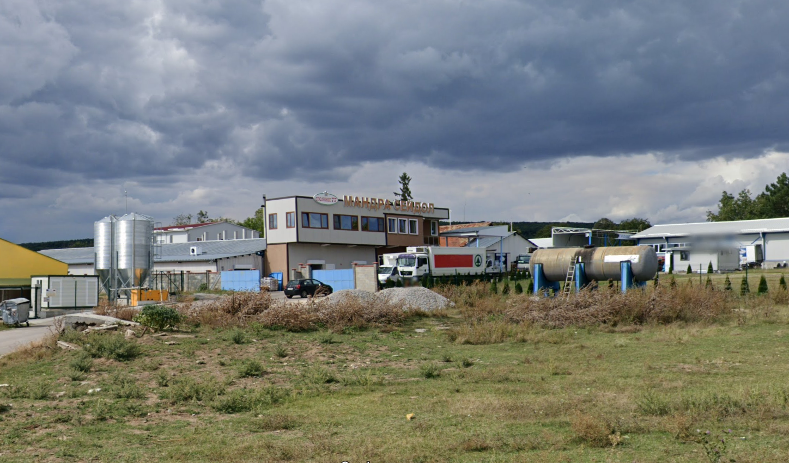
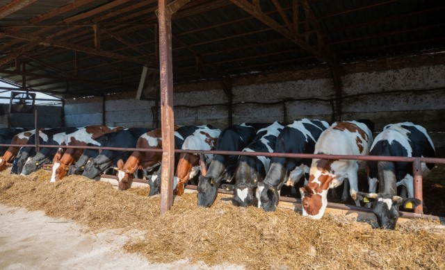
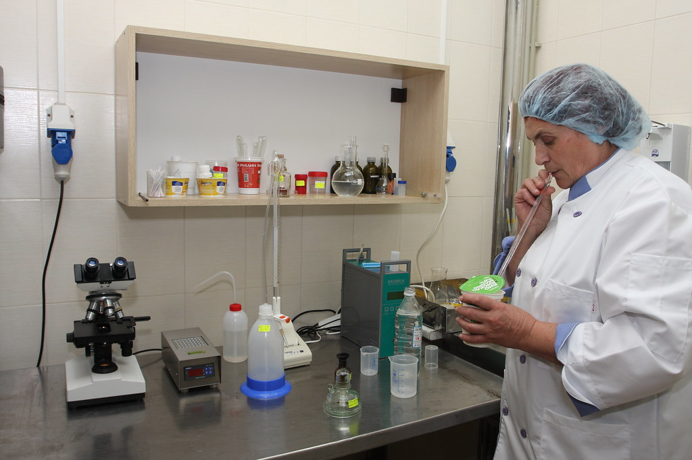
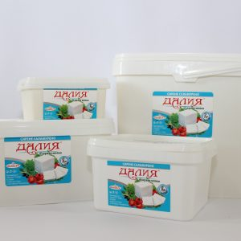
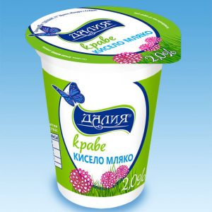
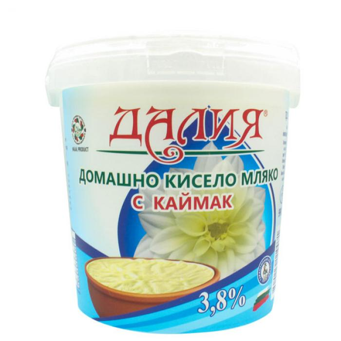
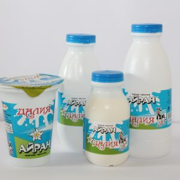
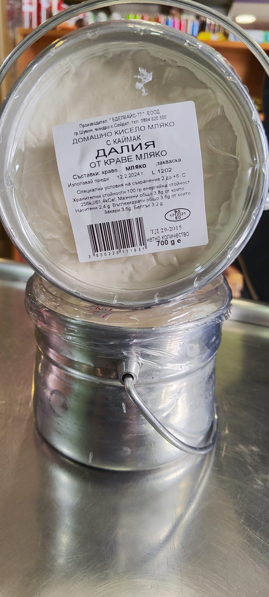
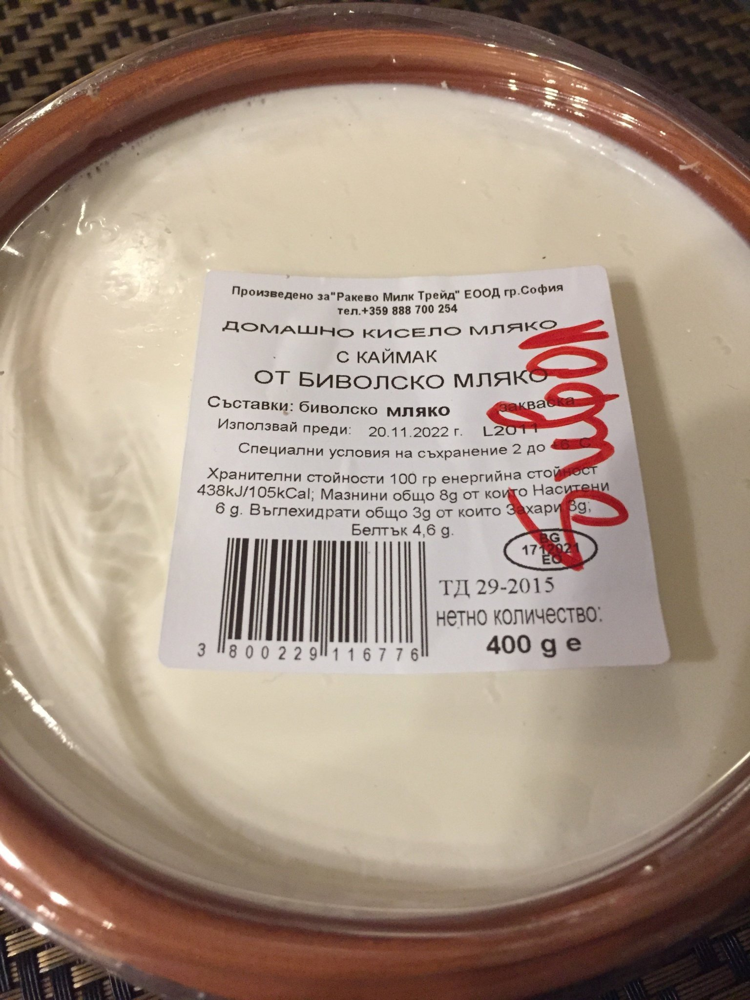
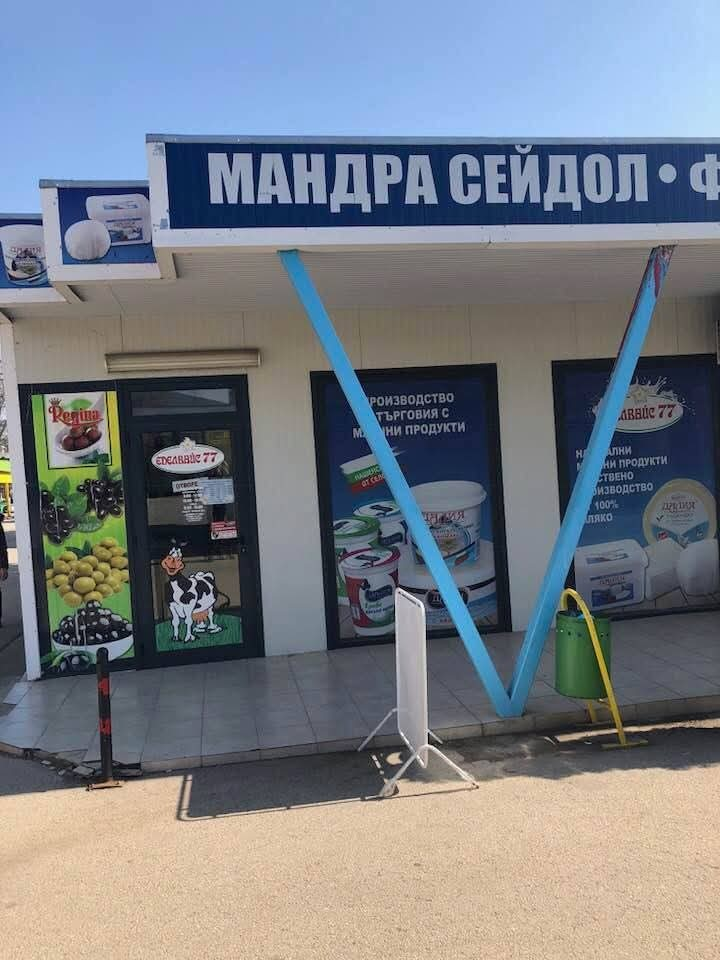

Мандрата "Еделвайс 77" ЕООД е разположена в село Сейдол, община Лозница, област Разград. Основана през 2007 година от Айхан Исмаилов, фирмата е утвърден производител на млечни продукти с богата история и традиции.

Качествени млечни продукти с автентичен български вкус
Мандрата "Еделвайс 77" ЕООД е разположена в село Сейдол, община Лозница, област Разград. Основана през 2007 година от Айхан Исмаилов, фирмата е утвърден производител на млечни продукти с богата история и традиции.

От създаването си, "Еделвайс 77" се стреми към високо качество и традиционен вкус, използвайки съвременни технологии и оборудване, отговарящи на всички европейски стандарти.
През 2023 година, фирмата стартира мащабен проект за модернизация и автоматизация на производствените процеси, финансиран по подмярка 4.2 "Инвестиции в преработка/маркетинг на селскостопански продукти" от Програмата за развитие на селските райони 2014–2020 г.
Проектът включва:
Очаква се дейностите по проекта да бъдат завършени до средата на 2025 година.

Използваме 100% българско мляко от местни фермери от региона на Разград. Нашите основни доставчици са:

Всички ферми спазват строги стандарти за отглеждане на добитъка и са сертифицирани по ISO 22000 и HACCP. Животните се отглеждат в естествена среда, с достъп до пасища и качествени фуражи.

Нашето традиционно българско бяло саламурено сирене се отличава с изключителен вкус и качество. Произведено от прясно краве мляко от избрани местни ферми.
Характеристики:
Разфасовки:

Произведено по автентична българска технология, нашето кисело мляко съчетава вековни традиции с модерни производствени стандарти.
Качества:
Варианти:
Разфасовка:

Изключително богато и кремообразно кисело мляко с каймак, произведено по традиционна българска технология. Отличава се с плътен каймак и нежна текстура.
Качество и състав:
Предимства:
Разфасовка:

Освежаваща млечна напитка, приготвена от прясно кисело мляко. Идеална за всеки сезон, с балансиран вкус и лека консистенция.
Предимства:
Разфасовка:
Летни варианти:

Автентично българско кисело мляко в традиционни глинени менчета. Уникалната глинена опаковка придава специфичен вкус и запазва полезните качества на млякото.
Предлагани варианти:
Предимства:
Разфасовка:

Изискано българско кисело мляко в специални керамични съдове. Керамичната опаковка поддържа оптимална температура и запазва вкуса.
Предлагани варианти:
Специални характеристики:
Разфасовка:
В рамките на мащабния проект за модернизация на нашата производствена база, с гордост ви съобщаваме за предстоящото разширяване на продуктовата ни гама.
Нови продукти в разработка:
Очаквайте тези нови продукти след приключване на модернизацията. Ще ви информираме своевременно за старта на продажбите.
Мандра "Еделвайс 77" от село Сейдол предлага своите висококачествени продукти директно на клиентите чрез фирмен магазин, разположен на централния кооперативен пазар в град Шумен.
В магазина ще откриете богато разнообразие от традиционни млечни продукти и храни, сред които:
Млечните продукти, предлагани в менчета и керамика, съчетават автентичен вкус и красива българска традиция – идеални както за лично ползване, така и за подарък.
Централен кооперативен пазар, гр. Шумен
(близо до входа откъм ул. "Съединение")

Адрес: село Сейдол, община Лозница, област Разград, България
Телефон: +359 894 620 600
Email: edelvays77eood@abv.bg